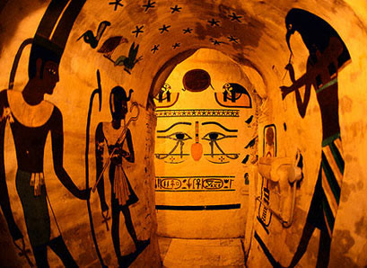
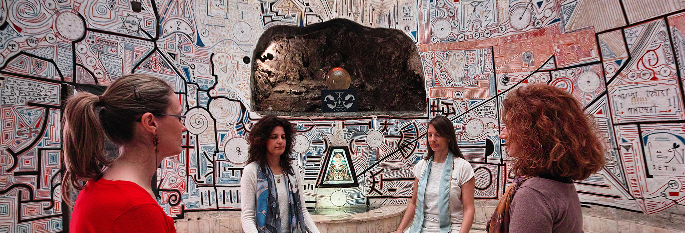
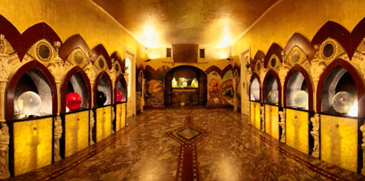
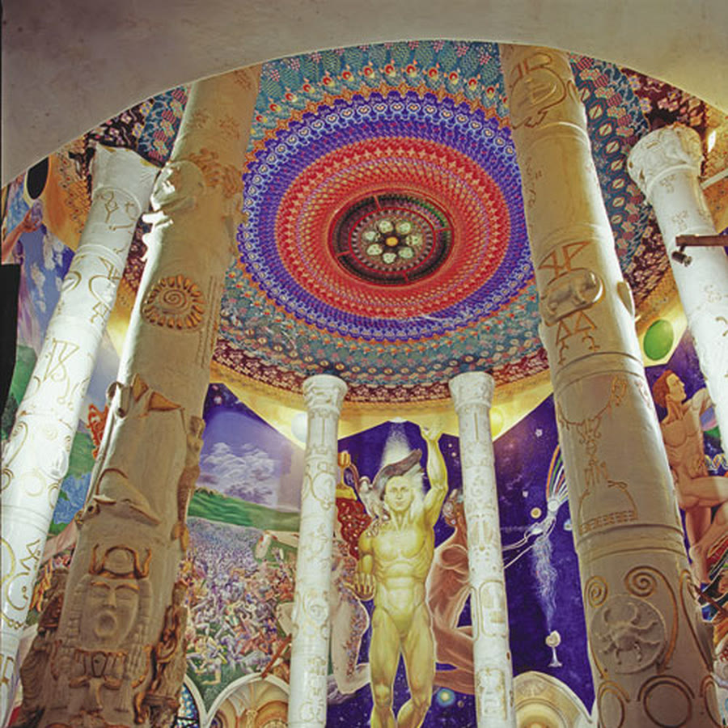
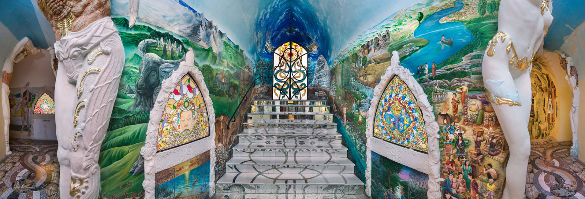
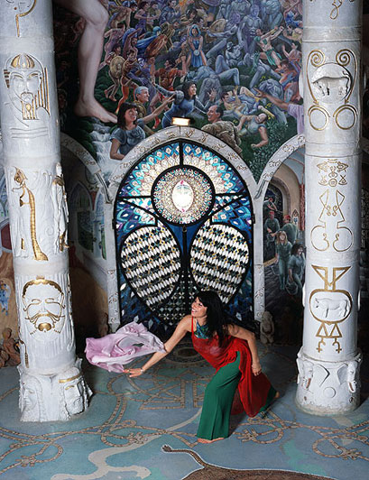
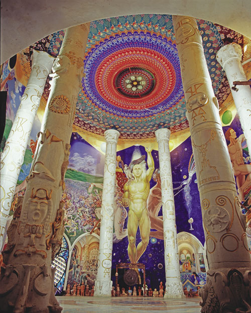
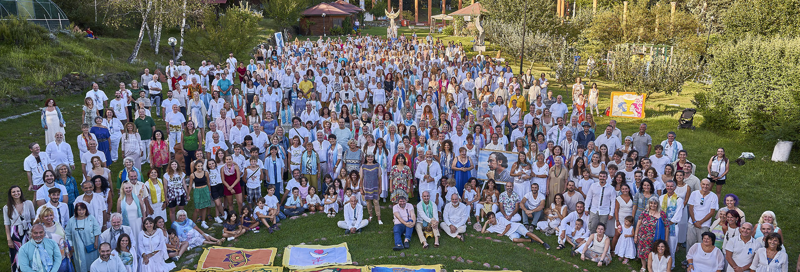
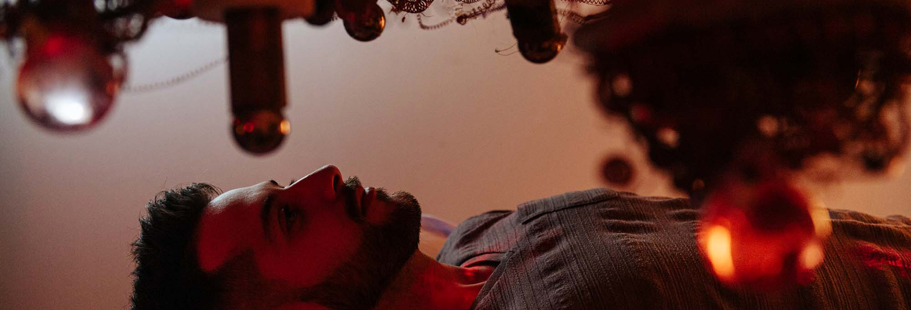
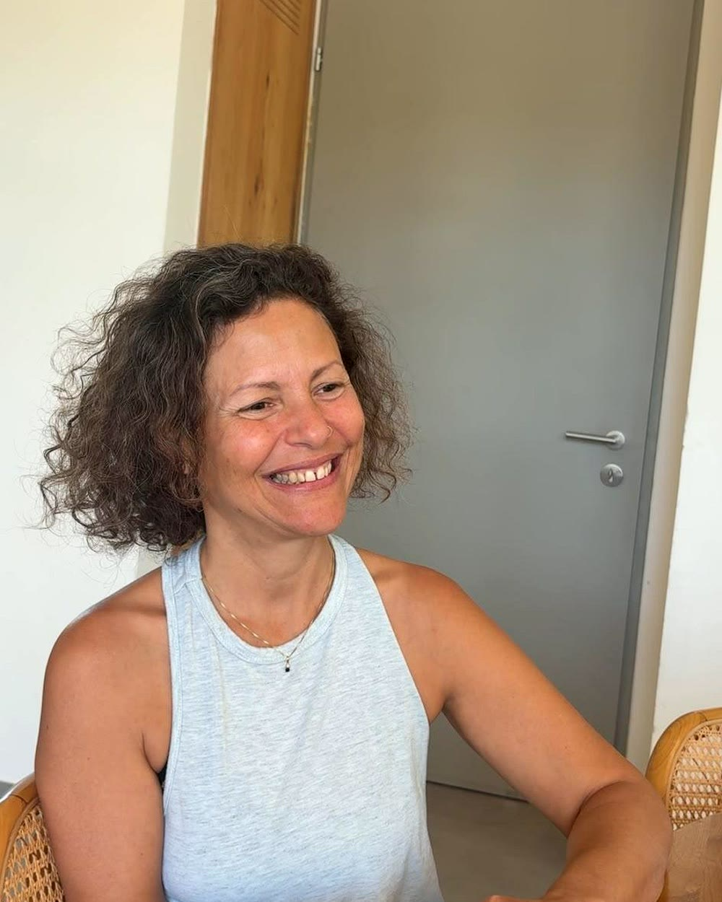

קווי הזמן של הלבמסע לדמנהור, איטליה
שישה ימים במקדשים שנחפרו בסתר שלושים מטר מתחת לאדמה, בקבוצה קטנה, בליווי אישי.
שישה ימים.
שלושים מטר מתחת לאדמה.
- טיסות אל על הלוך ושוב, כלולות במחיר
- Villa Soleil · 5 לילות באותו מקום, בלי לארוז כל יום
- קבוצה קטנה בליווי אישי של אנה, מהטיסה ועד החזרה
- שני טקסים שקורים פעם בשנה, והיכל שנפתח רק לקבוצה שלנו
טיסות, לינה, ארוחות בוקר וערב, הסעות, כניסות, סדנאות וטקסים.
חדר יחיד €2,745.
נחפרו בידיים, בסתר,
במשך שש עשרה שנה
ב 1978, בעמק שקט בצפון איטליה, קבוצה קטנה של אנשים התחילה לחפור אל תוך ההר.
שלושים מטר למטה הם בנו שמונה אולמות מקושתים, מכוסים בפסיפסים וויטראז׳ים. איש מחוץ לקהילה לא ידע. כשהרשויות הגיעו לבסוף, התובע איים לפוצץ את הגבעה , ואז הם ראו מה יש שם.
איטליה העניקה למקדשים היתר בנייה. רטרואקטיבית.

אנה מספרת על דמנהור

מה מחכה לכם במסע

היכל שאינו במסלול הרגיל
כניסה להיכל במקדשי האנושות שאינו נכלל בסיור הסטנדרטי, ונפתח במיוחד עבורנו.
עוד קצת
נקיים בו פעילות ייחודית משלנו, כולל מדיטציה דמנהורית. לפי תפיסת הקהילה, ההיכל נושא איכויות המאפשרות מעבר בין מימדים. מרחב נקי שנפתח רק לקבוצות בודדות.

מקדשי האנושות
סיור מודרך באולמות התת קרקעיים.
עוד קצת
שמונה אולמות מחופים פסיפסים, ויטראז׳ים וכיפות מצוירות ביד, שלושים מטר בתוך ההר. הסיור מלווה במדריכים דוברי אנגלית, ואנה מתרגמת ומרחיבה בעברית.

היער הקדוש
המקדש הפתוח: מבוכים וספירלות מאבן בטבע.
עוד קצת
ההמשך הפתוח של מקדשי האנושות, על מדרונות הרי פיימונטה. הליכה בין ספירלות אבן ומעגלי מדיטציה, בקצב שמאפשר לעצור, לנשום ולהקשיב.

ריקוד מקודש
הגוף מבטא את מה שקשה לנסח במילים.
עוד קצת
התנסות בריקוד המקודש הדמנהורי, שפת תנועה שהקהילה פיתחה. אין צורך בניסיון קודם, וכל אחת ואחד זזים בקצב שלהם.

סדנת חומר
סדנה בהנחיית אמן מהקהילה.
עוד קצת
בסטודיו האמנות של דמנהור (Damanhur Crea), עם אמן שהשתתף בבניית המקדשים. לגעת בחומר ולחוות דרך הידיים את מה שהמקום מלמד.

מפגש עם הקהילה
שאלות אמיתיות, תשובות אמיתיות.
עוד קצת
שיחה פתוחה עם אנשי דמנהור על החיים בקהילה בת חמישים שנה: איך מחליטים, איך חיים, ומה קורה כשלא מסכימים. בלי פילטרים.

זמן לעצמך
לא כל רגע מתוכנן.
עוד קצת
מנוחה, טיפולים אישיים בתיאום, טיול באזור או פשוט שקט. יומן מסע אישי מלווה את הדרך, מקום לכתוב את מה שעולה.
שני טקסים, פעם בשנה
טקס זיכרון המתים
אחד מחמשת הטקסים המרכזיים בלוח השנה הדמנהורי, פעם בשנה. נתחבר לשורשים ונפגוש בעיניים חדשות את הסיפור שממנו באנו.
טקס האורקל
במקדש הפתוח, בשעות הערב. לפני הטקס נקיים הכנה אישית, ובמהלכו אפשר לבחור במה להתחדש ולהניח כוונה לפרק הבא.

אנה גורן
14 שנים תכנתתי מחשבים ומכונות באינטל. היום אני עובדת עם המערכת המורכבת ביותר שקיימת, האדם. את שיטת הטיפול לא קניתי בהתחלה: חקרתי אותה, בידדתי משתנים, וניסיתי להוכיח שהיא לא עובדת. היא עבדה.
יום אחר יום
לחצו על יום כדי לפתוח.
1שישי · 30.10הגעה והתכנסות+
- המראה מתל אביב 05:20 עם אל על
- העברה למלון, מנוחה והתארגנות
- פעילות ערב קבוצתית וארוחת ערב משותפת
2שבת · 31.10היכרות עם דמנהור ואמנות+
- ביקור באזור המרכזי (Damjl), המקדש הפתוח, הספירלה והלבירינתים
- שיחה על הפילוסופיה ועל החיים בקהילה
- סטודיו האמנות וסדנת חומר עם אמן ממקדשי האנושות
3ראשון · 01.11מקדשי האנושות וטקס זיכרון המתים+
- ביקור מודרך במקדשי האנושות
- מבוא לעולם הטקסים, הסבר והכנה
- טקס זיכרון המתים
4שני · 02.11היער הקדוש וזמן אישי+
- ביקור ביער הקדוש
- זמן חופשי: טיפולים אישיים, מנוחה, טיול או עיבוד
- פעילויות קבוצתיות
5שלישי · 03.11ההיכל הבלעדי וטקס האורקל+
- מדיטציה דמנהורית באולם ״זמן העמים״
- הכנה אישית לטקס
- טקס האורקל במקדש הפתוח, בשעות הערב
6רביעי · 04.11ריקוד מקודש וחזרה+
- סגירת מעגל קבוצתית
- התנסות בריקוד המקודש הדמנהורי
- טיסה חזרה ממילאנו 20:10
ייתכנו שינויים בזמני הפעילויות מטעם דמנהור.
במילים שלהם
הודעות אמיתיות מהקליניקה. השמות שונו לשמירה על פרטיות.
מה כלול במסע
המחיר כולל
- טיסות אל על הלוך ושוב
- 5 לילות ב Villa Soleil
- ארוחות בוקר וערב
- הסעות פרטיות לאורך המסע
- כל הפעילויות בתוכנית
- כניסה למקדשי האנושות וליער הקדוש
- מדריכים דוברי אנגלית
- סדנאות, ריקוד וטקסים
- ליווי אנה לאורך כל המסע
- יומן מסע אישי
אינו כולל
- ארוחות צהריים
- ביטוח רפואי
- ביטוח נסיעות לחו״ל
- הוצאות אישיות וטיפולים אישיים
מה שחשוב לדעת
צריך רקע קודם בעולם הרוחני?
לא. אין דרישת רקע. ההסברים ניתנים בדרך, וכל פעילות מלווה בהכנה.
אני מגיע או מגיעה לבד. יהיה לי נעים?
רוב המשתתפים מגיעים לבד. הקבוצה קטנה, יש פעילות היכרות בערב הראשון וארוחות משותפות. אפשר לבקש שיבוץ משותף בחדר, או חדר יחיד בתוספת תשלום.
מה רמת המאמץ הפיזי?
הליכות מודרכות במקדשים, כולל מדרגות, וביער הקדוש בשטח פתוח. מומלץ נעליים סגורות ומעיל אטום למים, סוף אוקטובר בצפון איטליה קריר וגשום. יש מגבלה פיזית? ספרו לי לפני ההרשמה ונבדוק יחד.
אפשר לא להשתתף בטקסים?
כן. אין חובה. לפני כל טקס יש הסבר, ואפשר לצפות בלבד או לוותר.
מה זו בעצם דמנהור? קראתי דברים באינטרנט.
קהילה רוחנית אקולוגית שהוקמה ב 1975 בצפון איטליה, עם מרכז מבקרים רשמי שמארח מטיילים מכל העולם. מקדשי האנושות קיבלו היתר בנייה מהמדינה האיטלקית.
אנחנו מגיעים כאורחים, לא כחברים. באים לראות, ללמוד וללכת. יש שאלה או חשש ספציפי? דברו איתי.
יש אפשרויות אוכל מיוחדות?
כן, בתיאום מראש, צמחוני, טבעוני, ללא גלוטן. לציין בטופס ההרשמה.
מה מדיניות הביטולים?
לפי חוק הגנת הצרכן. עד 60 ימים לפני היציאה, החזר מלא בניכוי דמי ההרשמה. 59 עד 30 ימי עסקים, ניכוי 20%. 29 עד 15, ניכוי 50%. 14 עד 8, ניכוי 80%. שבעה ימי עסקים או פחות, ללא החזר.
החזר על טיסות ושירותי קרקע כפוף לתנאי הספקים. התקנון המלא באתר ״בוץ הרפתקאות״.
מה הקשר בין המסע לטיפול בקליניקה?
שני דברים נפרדים. אפשר לנסוע בלי קשר לקליניקה, ואפשר להיות בטיפול ולא לנסוע. המשותף הוא נקודת המבט, התבוננות על מה שמנהל אותנו מתחת לפני השטח.
ונחזור אל החיים.עם משקפיים חדשות.
אנה גורן · 054 עד 4421454
30 באוקטובר, 4 בנובמבר 2026